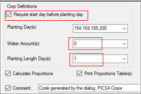

14 PICSA – Long Before the season
14.1 Introduction
PICSA (Participatory Integrated Climate Services for Agriculture) is an initiative to share climate information with small-scale farmers. It was described briefly in Chapter 1 and Fig. 12.1a is a repeat of Fig. 1.6a to show the different stages of the PICSA activity.
| Fig. 12.1a Stages of the PICSA project |
|---|
PICSA has been used in many countries in Africa and beyond, including Tanzania, Malawi, Lesotho, Ghana, Guyana, Rwanda, Haiti and Bangladesh. At first glance it may seem like many other initiatives to share climate information with farmers. It has some distinguishing features, that explain its inclusion in this guide.
The first distinguishing feature is the large set of activities that are undertaken prior to the availability of the seasonal forecast. They build on the information from the historical climatic data. There is a detailed instruction guide, with 12 sections. The first 7 are shown in Fig. 12.1b and take place in the “Long-before-the- season”, step shown in Fig. 12.1a.
| Fig. 12.1b |
|---|
The second distinguishing feature is that PICSA supports farmer’s activities in relation to crops, livestock or other livelihood activities. It identifies options and is not directed towards any particular crop or activity. This is indicated in Step d) of Fig. 12.1b.
Third is the emphasis on “options by context” that places the farmer (and not the “expert”) at the centre. Thus, PICSA does not make recommendations for the farmers. Instead it offers options, with the idea, shown in steps d and e, in Fig. 12.1b, that the farmers, or households, may wish to select those that particularly fit their circumstances. Fig. 12.1c shows an example of options related to livelihood activities.
| Fig. 12.1c | Fig. 12.1d |
|---|---|
| h |
These options are not pre-selected but are constructed through dialogues between the farmers and extension workers. Farmers evaluate options via a set of participatory exercises. One is a resource allocation map (RAM), step a) in Fig. 12.1b, an example of which is in Fig. 12.1d.
Further information on PICSA is available via the website https://research.reading.ac.uk/picsa/, Fig. 12.1e. Information includes the field manual, from which Fig. 12.1b shows the first 7 sections. This is currently available in 4 languages, namely English, Bengali, French and Spanish.
The idea, in PICSA, is that by step g, in Fig. 12.1b, the farmer has provisional plans for the season. These could apply to any season. These plans may then be modified by the extra information for this season, from the seasonal forecast, discussed in Chapter 13.
| Fig. 12.1e The PICSA webpage |
|---|
In this chapter we mainly consider Steps b and c from Fig. 12.1b. This is a discussion of the historical temperature and rainfall data, both in relation to climate change (Step b) and then to consider the risks from different options (Step c).
14.2 Climate change and variability
In PICSA it has been useful for farmers to examine and use the historical graphs themselves, e.g. Fig. 12.2a. Some have had little or no formal education, but almost all have been able to follow and interpret the ideas of these time series graphs.
| Fig. 12.2a |
|---|
Step b, in Fig. 12.1b is one of comparing farmers (and extension workers) perceptions of climate change with the evidence from the historical climatic records.
Many farmers, NGO and extension staff already have strong views on climate change. However, most have never seen any of the time series graphs of the type shown in Fig. 12.2b and Fig. 12.2c.
Temperatures usually show a clear trend, illustrated by Tmin in Fig. 12.2b. For rainfall the message is usually one of variability, Fig. 12.2c, rather than trend, being the main concern. This is a surprise for some, who interprete climate change as implying a change in the pattern of rainfall. This is partly because rainfall is by far the most important climatic element for tropical agriculture.
| Fig. 12.2b Tmax and Tmin, Dodoma | Fig. 12.2c Total annual rainfall, Dodoma |
|---|---|
Of course, if there is a trend in temperatures, then this is climate change. The climatic elements are interlinked, hence there must be a corresponding change in the other elements, including rainfall. However, rainfall is so variable from year to year, that any change is often not detectable. In addition, unlike temperatures, that are rising, the changes in the patterns of rainfall will not be so simple -some places will become wetter and others dryer.
Hence, in most sites where PICSA has been used, many of the activities, i.e. the options for farming households, are designed to manage the rainfall risks, (i.e. variability), rather than change.
There is an important corollary to this idea. It is easy to blame climate change “on the West” and hence assume it is a problem for others to solve. But rainfall variability, as shown in Fig. 12.2c, is a problem faced locally by successive generations. Hence discussing options to manage the risks is sensible for individual farmers to consider.
This type of discussion, within PICSA, is constructive for both the intermediaries (NGO and extension staff) and farmers in encouraging an openness to consider changes in their activities, i.e. to consider what options might be useful to manage the (rainfall) risks. This idea is well phrased in the ICRISAT study, (Cooper, et al., 2008). They claim that managing the current climate risks has a double benefit. It is useful itself, as well as preparing farmers for future climate change.
An initial one-week workshop is often used to introduce PICSA in a new country, or in a new district, within a country. The graphs, such as Fig. 12.2b and Fig. 12.2cc are usually part of the materials from the first day.
14.3 Producing the initial graphs - no data issues
Currently a key input in PICSA is a series of time-series graphs on aspects of the rainfall that are of direct interest, and support farmers in their choice of options. They don’t just look at the graphs, but also use them, as shown in Fig 12.2a, to calculate risks for themselves.
For many farmers, also for intermediaries, this is the first time they have seen this type of time-series graph. Hence, as mentioned above, it usually serves two purposes. The first is as a practical demonstration, that (for the rainfall) the main issue is one of variability, rather than change. Hence “the ball is in their court” to manage their climatic risks, rather than being part of the general topic of climate change. The second is as a tool to calculate the risks for alternative options.
These graphs are usually prepared by staff from the corresponding NMS. Currently the work is often by NMS headquarters staff, but perhaps LMS staff based locally may be able to do some of this work in the future. The production is simple when there are no “data issues” and is described in this section.
A checklist may useful, and an initial version is in Table 12.3a. Start with this list, and then edit to produce your own.
| Table 12.3a Initial checklist | ||
|---|---|---|
| Step | Action | R-Instat Dialogue |
| 1 | Read the data into R-Instat | File > Open from File |
| 2 | Check the data as input | Climatic > Tidy and Examine > One Variable Summarise |
| 3 | Make a date variable | Climatic > Dates > Make Date |
| 4 | Infill if dates are absent | Climatic > Dates > Infill |
| 5 | Make further date variables (possibly shifted) | Climatic > Dates > Use Date |
| 6 | Probably delete the initial year, month, day variables, plus further “housekeeping” | Right-click, then Delete and Reorder variables |
| 7 | Define the data as climatic | Climatic > Define Climatic Data |
| 8 | Omitting Check Data, because data are ok! | Could add: Climatic > Check Data > Inventory, Climatic > Check Data > Display Daily, Climatic > Check Data > Boxplot, etc. |
| 9 | Add rain-day variable | Climatic > Prepare > Transform |
| 10 | Save data as a R-file | File > Save As |
| 11 | Get annual/seasonal rainfall and rain day totals | Climatic > Prepare > Climatic Summaries |
| 12 | Get annual/seasonal mean temperatures | Climatic > Prepare > Climatic Summaries |
| 13 | Graph the max and min temperature | Describe > Specific > Line Plot |
| 14 | Graph the rainfall and rain day totals | Climatic > PICSA > Rainfall graphs |
This checklist involves largely going systematically down R-Instat’s climatic menu, shown in Fig. 12.3a, from Tidy and Examine, to the PICSA menu for the graphs of the annual summaries.
The data used for illustration are from a single station, Dodoma, in Tanzania, but the checklist works equally well with data from multiple stations. If the data file only has rainfall, then omit steps 12 and 13.
The data from Tanzania were supplied as an Excel file as shown in Fig. 12.3b. This was exported from Clidata (Tolatz, 2019) and is in the “right shape” for R-Instat, i.e. each row of data is for one day and the four elements are in successive columns.
| Fig. 12.3a | Fig. 12.3b |
|---|---|
Use File > Open from File to input your data.
To practice with these data, use Open from Library > Instat > Browse > Climatic >Tanzania and open the Dodoma18.xlsx file, Fig. 12.3c.
We first make a deliberate mistake. If you are following the exercise, then we strongly recommend that you make this mistake also. It is very common!
| Fig. 12.3c Importing from Excel | Fig. 12.3d Data imported incorrectly |
|---|---|
| h |
In Fig. 12.3c the data frame preview indicates something is wrong, because there are m values present. This is not always so obvious, because only 10 lines are shown, which may not include missing values.
Press Ok to import that data. The problem is now shown, in R-Instat, by the (c) after SUNHRS(c) and TMPMIN(c) and TMPMAX(c). These variables are numeric but have been imported as character (text) variables, because there are some non-numeric characters in these columns.
You can correct this problem in R-Instat, but it is simpler to correct when you import the data, or in Excel. Here it is easy to correct when the data are imported.
So, use File > Close Data File[^49]. Then recall the last dialogue to give Fig. 12.3c again and insert m as the Missing Value String, Fig. 12.3c. The preview changes to show NA instead of m. Press Ok and the variables are imported correctly.
Use the climatic menu, Fig. 12.3e and item 2 in the checklist, see Table 12.3a. Start with the Tidy and Examine menu, Fig. 12.3e. The data here are already tidy, hence move straight to the One Variable Summarise Dialogue. If your data are in a “different shape” some of the other dialogues in this menu may be needed.
| Fig. 12.3e The Tidy and Examine Menu | Fig. 12.3f One Variable Summarise |
|---|---|
The results are in Fig. 12.3g. They are promising, because of the following:
There are no missing values in the Year, Month, Day variables. It would be a problem if there were.
Amazingly the rainfall variable is also complete. This is great, but rare. There are missing values in the other elements, partly because they started later than the rainfall.
However, the Station name was imported as a character, and not a factor variable.
| Fig. 12.3g Results from Summary – Step 2 in checklist | Fig. 12.3h Name as Factor |
|---|---|
 |
The Station name is not a problem here, because there is only one station. However, it is still made into a Factor variable for completeness, Fig. 12.3h. This is important when there are multiple stations in the same file.
| Fig. 12.3i | Fig. 12.3j |
|---|---|
The Climatic > Date menu, Fig. 12.3i is used for Steps 3 to 5 in the checklist, Table 12.3a. First calculate a single Date variable, i.e. a Variable of Type (D). Here it is calculated from the 3 variables, giving the YEAR, MONTH and DAY as shown in Fig. 12.3j.
| Fig. 12.3k Infilling where dates are omitted | Fig. 12.3l Adding variables from the date |
|---|---|
Next – Step 4 - is to check for any gaps in the data, using Climatic > Dates > Infill Missing Dates, Fig. 12.3k. They are absent dates in the file, for example a year being absent. This is separate from the dates being complete, but with missing values in the data.
In this case the result was that there was nothing to infill. Proceed to Step 5 with Climatic > Dates > Use Date, Fig. 12.3l. Dodoma is in the southern hemisphere, with a single rainy season from November to April. Hence, in Fig. 12.3l, the year is shifted to start in July. Five variables are generated, as shown in Fig. 12.3l.
Now a little “housekeeping”, Step 6 in the checklist. Right-click and delete the 3 original YEAR, MONTH DAY variables and re-order the remaining variables, Fig. 12.3m, so the measurements are last. This is a convenient, and not an essential step.
| Fig. 12.3m | Fig. 12.3n |
|---|---|
The data are shown in Fig. 12.3n. They are now ready for Step 7, which is to define the data as climatic, as shown in Fig. 12.3o.
| Fig. 12.3o Defining a data frame as climatic | Fig. 12.3p The Check Data Menu |
|---|---|
The Climatic > Define Climatic Data dialogue should largely be filled automatically. Check carefully this it has the variables you will be using in the future analyses. Check, especially, the variable for the Station names and those for the dates. Then press the Check Unique button.
In this check, green is a good colour as is shown in Fig. 12.3o. This check verifies that the combination of Station name and Date can become key fields in this data frame. If not, then it is likely that you have some duplicates in the data. Duplicates are days (rows) in the file where a date has been given twice. Then you need to return to the Climatic > Tidy and Explore menu as we discuss in Section 12.6.
In the checklist, Table 12.3a you now usually move to the Climatic > Check Data menu, Fig 12.3p. This is described in detail in Chapter 5, and we return to this menu in Section 12.6. It is omitted here to proceed quickly to the production of the variables and graphs needed for PICSA.
| Fig. 12.3q | Fig. 12.3r |
|---|---|
Hence, move to Step 9 in the checklist, i.e. the Climatic > Prepare menu, Fig. 12.3q. The Climatic > Prepare > Transform dialogue, Fig. 12.3r is used first as explained below.
Complete Fig. 12.3r as shown and press Ok. This produces a new variable, called rainday, that takes the value 1 when it is rainy – defined here as a day with more than 0.85mm. It is zero otherwise, as shown in Fig. 12.3s. This is used for graphs of the number of rain days.
| Fig. 12.3s Saving the data | Fig. 12.3t Save the RDS file |
|---|---|
These data are now saved as an R file, i.e. with an RDS extension. Use File > Save As > Save Data As, Fig. 12.3s to give the dialogue shown in Fig. 12.3t. Browse to where you want to save the data. Once you click Save on that dialogue, you return automatically to Fig. 12.3t and click Ok to make the Save.
Once the data are saved, then re-open these saved data, to continue the work on a future occasion. The first 10 steps do not have to be repeated
These steps, so far, have been described in detail. In practice, once they become routine, they typically take 5 minutes or less. If problems are found during the process, then we strongly recommend you consider making corrections in the database, or (less comfortably) in an Excel file, and then start the checklist again.
If you are following these steps with the Dodoma data, then it is time to substitute a further data set. The data used, so far, was of very good quality, but there were still some issues, that we discuss in Section 12.6. Hence use File > Open From Library > Instat > Browse > Climatic > Tanzania again and choose the file called Dodoma18c. The data are the same, except 2 more variables are added, with the corrected temperature data. These new variables are called Tmax and Tmin.
| Fig. 12.3u Rainfall and temperature summaries | Fig. 12.3v Day range sub-dialogue |
|---|---|
| h |
The next steps, 11 and 12 in the checklist, both use the Climatic > Prepare > Climatic Summaries dialogue, Fig. 12.3u
Two important decisions are i) whether the summaries are to be for the whole (shifted) year, or perhaps just for the rainy season? Then ii) how you will handle missing values in the data.
In Fig. 12.3u we choose to get all summaries for the rain variable for the 6 months of the rainy season, from November to April. Hence click on the Day Range button in Fig. 12.3u.
In the sub-dialogue in Fig. 12.3v, choose the range to be November 1st to April 30th. After pressing Return you see that the day range is now 6 months, from the shifted day number 124 to day 305, i.e. about 182 days.
Now, in Fig. 12.3u, check the Omit Missing Values checkbox. Then click on the Summaries button, and then on the Missing Tab, Fig. 12.3w. Set it, as shown in Fig. 12.3w, to about 160 days. This permits a few missing values, but not a complete month missing.
Then, in the same sub-dialogue, click on the Summaries tab and just have the N-Non Missing and the Sum checked, as shown in Fig. 12.3x.
| Fig. 12.3w Missing values tab | Fig. 12.3x Summaries calculated |
|---|---|
Pressing Ok in the dialogue in Fig. 12.3u results in a new data frame with 4 variables and 85 rows, Fig. 12.3y, because there are 85 years (seasons) of data. The summary for the first year (1934/35 season) is missing. This may come as a slight surprise, because there are no missing values in the rainfall data. However, the record starts on 1 January 1935, which therefore does not have November or December of the 1934/35 season.
| Fig. 12.3y | Fig. 12.3z |
|---|---|
Return to the same dialogue (Climatic > Prepare > Climatic Summaries) to add 3 more summaries.
Change the rain to the rainday variable in the main dialogue, Fig. 12.3u. Press Ok.
Change the element to Tmin and change the Summary to the Mean, (rather than the Sum). Press Ok.
Change the element to Tmax. Press Ok.
The results are in Fig. 12.3z. They show, for example, that in the 1962-63 season (November to April) there was a total of 422mm rain from 41 rain days, hence an average of just over 10mm per rain day. The value of Tmin could not be given, because there were only 147 non-missing days in that season. The mean for Tmax was 29.4˚C.
Finally, in this initial checklist, give the corresponding graphs. For the temperature data there is not yet a special climatic dialogue, so use Describe > Specific > Line Plot, as shown in Fig. 12.3aa.
| Fig. 12.3aa | Fig. 12.3ab |
|---|---|
| h |
In Fig. 12.3aa the Multiple Variables option is used to facilitate plotting Tmax and Tmin together. Points are added, as is a line of best fit. The Data Options button is also used to filter the data to just s_year > 1957.
The resulting graph is shown in Fig. 12.3ab. It indicates an increase of temperatures, with Tmin having a higher slope than Tmax. The analysis of the temperature data and the presentation of the corresponding PICSA graphs is considered further in Section 12.5.
| Fig. 12.3ac Remove filter | Fig. 12.3ad The Climatic > PICSA dialogues |
|---|---|
Before doing a rainfall graph use Right-click and the last option is to Remove Current Filter, Fig. 12.3ac.
Then use Climatic > PICSA > Rainfall Graph, Fig 12.3ad. Graph the variable called sum_rain, Fig. 12.3ae. Then use the PICSA Options button to add a horizontal line for the mean, Fig. 12.3af.
| Fig. 12.3ae ***Fig. 12.3af | *** |
|---|---|
| {width=“2.8456485126859143in height=”2.7895516185476814in”} | ”  |
The resulting graph is shown in Fig. 12.3ag. Return to the Climatic > PICSA > Rainfall Graph dialogue and substitute the sum_rainday variable to give a similar graph of the seasonal number of rain-days.
| Fig. 12.3ag PICSA graphs of the seasonal totals and number of rain days |
|---|
The results are in Fig. 12.3ag. They show that the mean rainfall total was about 560mm from an average of just over 40 rain days. This is an average of about 7 rain days per month, roughly one day in 4. This is sufficiently low that it is likely that there are often long dry spells during the season.
We have produced our first “PICSA-style” graphs. Further graphs are produced in the next Section, together with ways of making the graphs appropriate for the extension staff and for farmers.
14.4 The rainy season
In this section we consider the production of further rainfall summaries with the Climatic > Prepare menu and the corresponding graphs from the Climatic > PICSA menu.
Usually between 6 and 8 graphs are prepared and discussed on the first day of the main PICSA workshop. They all have the same format as shown in Fig. 12.3ag and are designed to look consistent. The x-axis is the years (or seasons) and the y-axis is for something of interest. They usually include a rainfall total, Fig. 12.3ag together with the start, end and length of the rainy season. There are then one or two graphs of events within the season, for example the length of the longest dry spell or the most extreme daily rainfall.
Definitions can be changed easily. PICSA encourages “options by context” and this can apply to households and or crops having different definitions for the start of the rains, and for any other characteristic.
The graphs are also used on the “practice with farmers day”, during the workshop, usually day 4. Following the workshop, the agreed graphs are then used by the extension staff or farmer’s representatives to share with individuals or groups of farmers.
We continue with the data from Dodoma, used in Section 12.3.
| Fig. 12.4a Start of the rains | Fig. 12.4b Adding a dry-spell condition |
|---|---|
 h h |
 |
Use Climatic > Prepare > Start of the Rains, Fig. 12.4a. A range of definitions of the Start of the rains is discussed in Section 7.3. In 2019, in Malawi and Tanzania the definitions used were:
Malawi: First occasion from 1 October with 25mm or more in 3 days.
Tanzania: First occasion from 15 November with 20mm in 4 days, of which 2 days were rainy.
We here use the same as Tanzania. Hence click on the Day Range in Fig. 12.4a and set the earliest date to 15 November. Make the latest date 29 February. Then complete the dialogue as shown in Fig. 12.4a and press Ok.
This generates 2 new variables, the first with the day number in the (shifted) year and the second giving the corresponding date.
Return to the Climatic > Prepare > Start of the Rains dialogue and add the dry-spells condition, Fig. 12.4b. Change the default of 9 days to 10 days as the maximum allowable spell[^50]. Also change the names of the resulting variables, or the events produced before will be overwritten.
| Fig. 12.4c End of the rains | Fig. 12.4d |
|---|---|
 he he |
 |
Fig. 12.4c End of the rains Climatic > Prepare > End of the Rains |
Fig. 12.4d |
|---|---|
In Chapter 7 we discuss the use of these alternative definitions of the start. Here we simply choose one of them – for the next PICSA graph. We quickly also get data on the end and length of the season.
In many countries we use a simple water-balance definition of the end of the rains/season. This does not work well in Southern Africa, as explained in Section 7.4. Hence here we use the method proposed by (Mupamgwa, Walker, & Twomlow, 2011).
So, complete the Climatic > Prepare > End of the Rains dialogue as shown in Fig. 12.4c. In the Day Range use 15 February to 30 June.
Then use Climatic > Prepare > Length of the Season, Fig. 12.4d and complete as shown.
The results have added variables to the annual data frame, Fig. 12.4e. The year indicated shows that in the 1937/38 season there was a planting opportunity on day 174, (i.e. 21 December). But, if the dry-spell definition is included then the start was on 23rd January. The last heavy rainfall was on 31st March, which was defined as the end of the rains/season, giving a season length of 101 days.
Graphs can be produced assuming the user accepts the definitions.
| Fig. 12.4e The annual data frame | Fig. 12.4f A graph of the Start |
|---|---|
 |
 |
Use Climatic > PICSA > Rainfall Graph for the variable start_rain and complete as shown in Fig. 12.4f. Then complete the PICSA options for the Y-axis and the Lines, as shown in Fig. 12.4g and 12.4h.
| Fig. 12.4g | Fig. 12.4h |
|---|---|
 {width=“2.811955380577428in” ](figures/Fig 12.4f.png){width=“2.9353149606299214in” height=“2.2885793963254595in”} {width=“2.811955380577428in” ](figures/Fig 12.4f.png){width=“2.9353149606299214in” height=“2.2885793963254595in”} |
The resulting graph is in Fig. 12.4i. There can be similar graphs for the end of the rains and the length of the season.
| Fig. 12.4i PICSA graph for the start | Fig. 12.4j The start with the dry-spell condition |
|---|---|
 |
 |
Then it is time to reflect in three different ways:
Is this the right definition to use for the start? For example, should the 15 Nov be the earliest possible starting date, given that quite a lot of seasons had a starting opportunity very close to this earliest date. Or should the dry spell have been included.
It is easy to try the graph with the dry spell included. Just return to the Climatic > PICSA > Rainfall Graph dialogue, substitute the start_dry variable and press Ok to give the graph in Fig. 12.4j. The mean starting date is now about a week later and there are considerably more years that do not have a successful start until January. Which graph more closely reflects the farmer’s situation?Does the graph indicate there may be problems with the data? Often the first results indicate possible data issues. In this case there is nothing that stands out, but to show what might be done, we examine the extreme value in Fig. 12.4i. This was a start only on 6th February in the 1960/61 season.
Fig. 12.4k The start in the extreme year
|
Fig. 12.4l PICSA graph with options | |
|---|---|---|
| ![] (media/ima ge1284.png ){width=“0 .981046587 9265092in” height=“4 .193491907 261592in”} |  {widt h=“1.1892607 174103238in” heigh t=“4.1505664 91688539in”} {widt h=“1.1892607 174103238in” heigh t=“4.1505664 91688539in”} |
 |
Use the Climatic > Check Data > Display Daily dialogue to give the results in Fig. 12.4k. This shows that November and December did have very poor rains in that season. With the definition of the start used in Malawi (25mm in 3 days) the start would have been on 23rd January, but the insistence, in the Tanzania definition, of at least 2 rain days ruled this out. Hence the start was indeed on 6th February.
- Is the graph as clear as possible for the intended PICSA audience? This is what we address here.
An example of a graph with additional options is in Fig. 12.4l. The elements changed, compared to the default, are shown in Fig. 12.4m.
| Fig. 12.4m Setting PICSA graph options |
|---|
 |
From the titles tab in Fig. 12.4m, a sub-title shows what has been plotted. The caption gives credit to TMA for supplying the data. The units are now specified on the y-axis.
On the x-axis the labels are given every 10 years.
On the y-axis the data start at zero. I like that!
In Fig. 12.4n the x-axis labels have been changed to every 4 years. The minor-grid lines are now omitted (using the Panel tab in the sub-dialogue). The sub-title has also been moved to become part of the caption[^51].
| Fig. 12.4n | Fig. 12.4o |
|---|---|
 |
 |
Further “within the season” graphs can be given as needed. The season length was calculated earlier, Fig. 12.4e and is plotted in Fig. 12.4o. The median length at Dodoma was about 4 months and varies between 2 and 6 months.
The total rainfall within the season is sometimes requested. This is the rainfall between the start dates and the end dates. This again uses the Climatic > Prepare > Climatic Summaries, as shown in Fig. 12.4p.
| Fig. 12.4p Climatic > Prepare > Summaries | Fig. 12.4q Day Range from start to end |
|---|---|
|
|
The difference here, from the summaries given earlier, is the choice of the dates, from the Day Range button in Fig. 12.4q. In Fig. 12.4r they are specified as Variable Day and use the summary data for the start and end of the rains, that was found earlier. In the dialogue, in Fig. 12.4q the missing values checkbox is now unticked to dis-allow any years when there are missing values for the rainfall during the season.
| Fig. 12.4s | Fig. 12.4t |
|---|---|
 |
 |
The results are in the last 2 variables of the summary data, shown in Fig. 12.4s. In this summary, the variable called count_rain is the number of days used for the sum and is almost the same as the length – which is also given in Fig. 12.4s. It should be the same, because it is simply counting the number of days used for that calculation, i.e. between the start and end dates. It is thus effectively another way of finding the length[^52].
The resulting graph is shown in Fig. 12.4t.
An attractive way these results can be used is shown in Fig. 12.4u. The data, from Fig. 12.4s, can be transferred to an interactive app which (unlike R-Instat) is available for a smart-phone. In Fig. 12.4u the user can move the slider, shown at 600mm to find the risks for any given seasonal rainfall required.
| Fig. 12.4u |
|---|
 |
It is an obvious graph and is often proposed for PICSA. However, it is complicated, as it is composed of three elements, namely the start, the end, and then the totals within this period, that varies from season to season. We often find it is not very different to the graph with fixed end points, such as Fig. 12.3ag that gave the totals from November to April.
These graphs, from the start to the end may be more relevant for sites where there is a bimodal pattern of rainfall. Even then that would be “in competition” with simpler graphs giving the totals for fixed periods, say from October to December and then for March to May.
We return to the possible use of the facility for variable dates in the Section 12.5.
This same facility for flexible choice of the starting and ending dates is available in other dialogues and the longest dry-spell length during the season is an obvious graph.
The Climatic > Prepare > Spells dialogue is shown in Fig. 12.4v. The Day Range is completed as shown earlier in Fig. 12.4r. The graph of the spell lengths, using Climatic > PICSA > Rainfall Graphs is then shown in Fig. 12.4 w. The median for the longest spell length in the season is 2.5 weeks and about 1 year in 7 has a dry spell of 25 days or more.
| Fig. 12.4v Dry spells during the season | Fig. 12.4w Graph of maximum spell lengths |
|---|---|
 |
 |
The Climatic > Prepare > Extremes dialogue facilitates a study of extreme events. It is used in Fig. 12.4x to find the maximum single day rainfall each year, together with when the maximum occurred.
The graph, in Fig. 12.4y shows the median is 66mm on a day and just a few years have a day with more than 100mm. The colours in Fig. 12.4y indicate which month the maximum value occurred, and indicate that it can be in any of the months of the rainy season[^53].
| Fig. 12.4x | Fig. 12.4y |
|---|---|
 h h |
14.5 More with the rainfall and temperature data?
With rainfall propose more detailed analyses and other types of presentation.
Vertical lines instead of joined lines[^54]?
| Fig. 12.5a |
|---|
 |
Also do risks for temperatures, where no special facilities exist. First frost and last frost in Leshoto as examples. Also in more detail in Chapter 8.
Also ask about Bangladesh where the risks may be of too much rain, rather than too little?
14.6 Coping with data issues
14.7 Combining risks for different crops
Table 12.7a is taken from the PICSA Field Guide, (Dorward, Clarkson, & Stern, 2016) and shows the sort of results we are aiming for. The first step is for the Ministry of Agriculture or elsewhere to provide the information in the first 4 columns of Table 12.7a. This specifies various crops (options for PICSA farmers) together their length and water requirement. For example, the local variety of maize is a 120-day crop and needs 480mm water. Alternatively, a possible variety of sorghum is 110 days and needs 300mm.
The calculations in this section provide the risks from specified dates of planting. In the last column of Table 12.7a the chance of success from a late planting is just one year in 5 for the local maize, compared to 3 years in 5 for the sorghum.
| Table 12.7a Example crop table | ||||||
|---|---|---|---|---|---|---|
| Crop | Variety | Days to maturity | Crop water need (mm) | Chance of success if season starts: | ||
| on x (Early) | on x (Middle) | on x (Late) | ||||
| Maize | Local | 120 | 480 | 5/10 | 4/10 | 2/10 |
| Maize | Pioneer xxx | 100 | 350 | 7/10 | 5/10 | 4/10 |
| Sorghum | Seed Co xxx | 110 | 300 | 8/10 | 7/10 | 6/10 |
Overall, for a chosen planting date, there are 3 separate risks, as follows:
Planting may not be possible by that date, i.e. the season starts later.
There may not be time to grow the crop, i.e. the season ends too early
There may be insufficient water in the time needed for the crop.
The crop will only be successful if none of these three risks occurs. We call this the “Overall risk”.
A second possibility is the calculation of the risk of success if there is a planting opportunity on day x. In that case, just risks 2 and 3 apply. This is the “Conditional risk”.
The example used is for Dodoma in Tanzania. Use File > Open from Library > Instat > Browse > Tanzania > Dodoma.
Use Climatic > Check Data > Boxplot as shown in Fig. 12.7a to show the seasonal pattern of rainfall. The results are in Fig. 12.7b. There July and August are omitted because there was no rain over the lower threshold of 0.85mm. The rainy season is seen to be from November to April.
| Fig. 12.7a | Fig. 12.7b |
|---|---|
As a second preliminary, Fig. 12.7c uses Climatic > Prepare > Climatic Summaries to show the seasonal totals. The summary data are in Fig. 12.7d.
| Fig. 12.7c | Fig. 12.7d Summary Data |
|---|---|
| h |
The Climatic > PICSA > Rainfall Graph, Fig. 12.5e is then used to show the resulting data. This is in Fig. 12.7f, and shows the seasonal mean is just over 550mm.
| Fig. 12.7e Climatic > PICSA > Rainfall Graph | Fig. 12.7f |
|---|---|
The start and end of the rains are two of the building blocks for the crops dialogue. Hence these are now found. They will usually already be available from earlier calculations, see Section 12.3, but are also shown here for completeness of this section.
| Fig. 12.7g | Fig. 12.7h |
|---|---|
| h |
The resulting data frame is shown in Fig. 12.7i and the start and end of the rains are shown graphically in Fig. 12.7j.
With these preparatory steps the scene is now set for the crops dialogue.
| Fig. 12.7i | Fig. 12.7j |
|---|---|
Use Climatic > PICSA > Crops. For clarity the dialogue is shown twice. In Fig. 12.7k the top controls are completed with the data frame for the daily data, i.e. dodoma.
| Fig. 12.7k Crops with daily data | Fig. 12.7l Crops with start and end data |
|---|---|
 |
Then, as shown in Fig. 12.7l, the dates for the start and end of the rains are from the summary data, i.e. using the dodoma_by_s_year data frame. The details of the crop are then also specified.
For this first illustration a crop planted on day 185 (1 January) that needs 300mm water and has a growing season length of 90 days is used.
The results are in the output window and also in two new data frames, shown in Fig. 12.7m and Fig 12.7n. The overall summary is in Fig. 12.7m and shows that this combination has a chance of success of 0.412, about 4 years in 10.
The detailed results are in Fig. 12.7n. In the 1935/36 season there was a planting opportunity on day 177, i.e. before our day 185 requirement. The rainfall in the 90 days from day 185 was 357mm, which is sufficient and the end date of day 296 was also more than 90 days from the starting date.
| Fig. 12.7m | Fig. 12.7n [Redo when no zero in first year] |
|---|---|
| h |
Hence all 3 conditions were TRUE and hence the final column, called overall_cond is also TRUE. This final variable is TRUE in xxx of the 77 years that did not have missing data, giving the overall result of 0.412. Change when corrected.
The 1947/48 season was one where the rainfall in the 90 days was just 244mm and hence was insufficient. In 1949/50 the season was not long enough and in 1950/51 there was no starting opportunity by January 1st. These years all contributed to the 6 years in 10 when the crop would have had problems.
| Fig. 12.7o | Fig. 12.7p |
|---|---|
Return to the Climatic > PICSA > Crops dialogue and specify planting dates from 1st December to mid-January as shown in Fig. 12.7o. There is also a range of crop water requirements, from 250 to 400mm) and crop durations from 75 to 120 days. At other sites crops with a greater water requirement and with longer season lengths could also be considered. For Dodoma, the initial graphs in Fig. 12.7b, 12.7f and 12.7j suggest the range of values given in Fig. 12.7o.
The results, in the output window, are shown in Fig. 12.7p. They can be interpreted here, but for presentation they are copied into Excel or to Calc (in Open Office). Copied from Fig. 12.7p they can be pasted into Excel, using the Import wizard. The results are shown in Fig. 12.7q
| Fig. 12.7q | Fig. 12.7r |
|---|---|
In Excel it is convenient to express the risks as fractions over 10 years as is shown in Fig. 12.7s. The results are in Fig. 12.7s. From Fig. 12.7t we see that a 75 day crop that needed 250mm and planted in 1st December would be OK in 6 years out of 10. Later planting would slightly increase the chance of success.
| Fig. 12.7s | Fig. 12.7t Find the planting probabilities |
|---|---|
|  |
A 90-day crop with this same modest water requirement would have a greater chance of success, if planted in December, but not if planting were delayed till January.
It would be useful to include the chance of being able to plant by the dates given in Fig. 12.7t. A possible exercise in a training workshop is to consider how many different ways this can be found in R-Instat[^55]. We choose a bizarre, but simple way using the Climatic > PICSA > Crops dialogue as shown in Fig. 12.7u. Complete the dialogue as shown in Fig. 12.7u. This is just for the first day of the crop, when we assume it needs no water. So the only risk is from the planting day.
| Fig. 12.7u | Fig. 12.7v |
|---|---|
The results are in Fig. 12.7v. They show, for example that there is a planting opportunity by 1 Jan in 9 years out of 10. This information is now added to the table of crop risks, Fig. 12.7w. The interpretation is that in 4 years in 10 there was a planting opportunity by 1st December. In a year when planting was possible on 1st December the proportion of successes for a 75-day crop needing 250mm water was 6 out of 10.